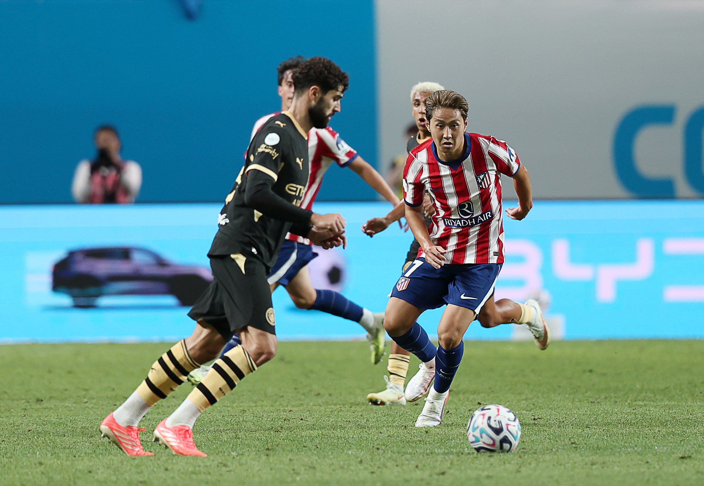
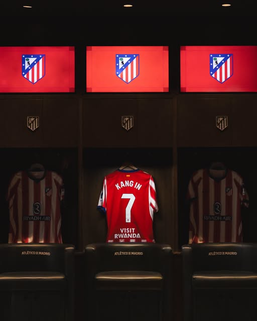
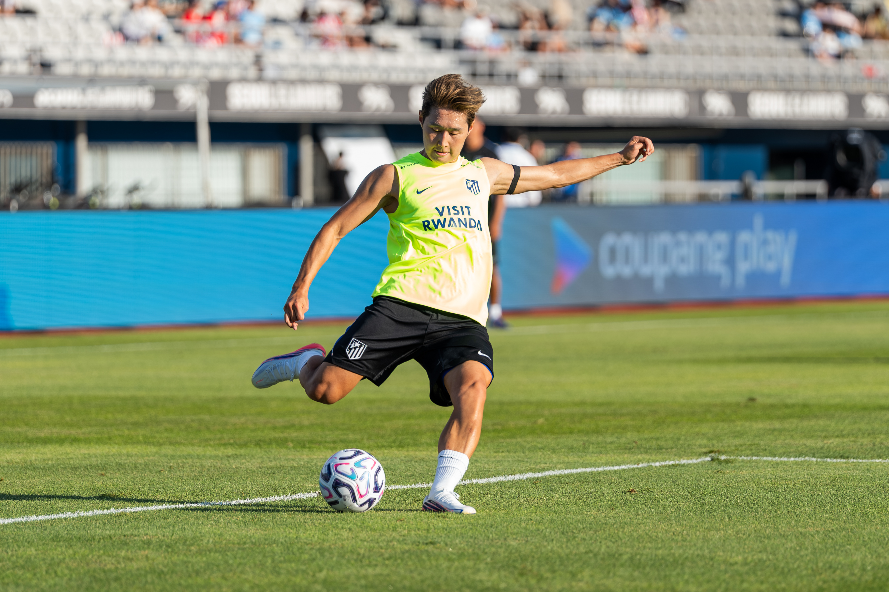
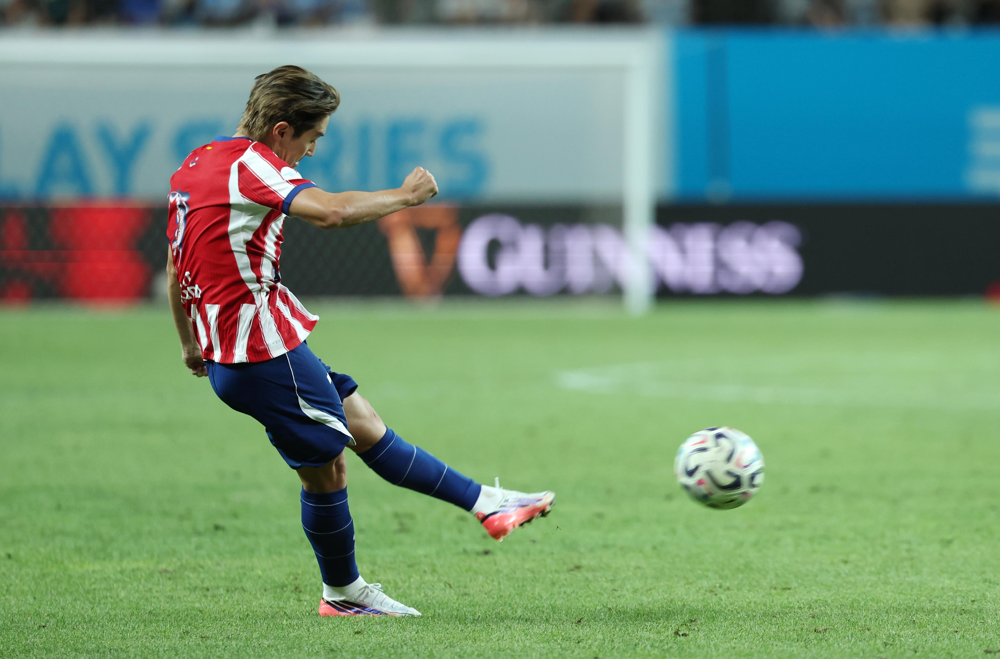
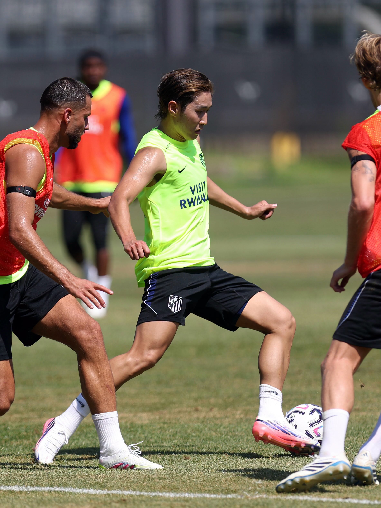
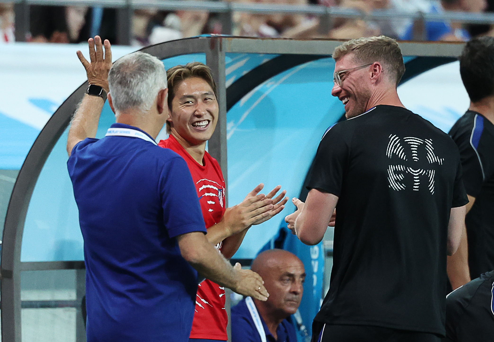
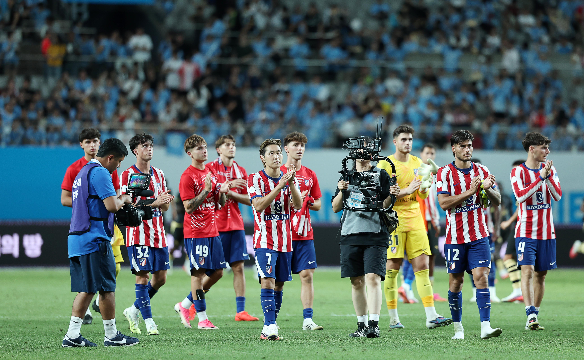

01 · PRESS RESISTANCE압박이 오면 버티고
압박이 오면 버티고
미리 봐둔 길을 뚫습니다
상대가 가까이 붙을수록 빈 공간이 생깁니다.
몸을 열어 받는 방향과 첫 터치가 압박을 다음 패스의 출발점으로 바꿉니다.

어디서 뛰든,
공격의 길을 바꾸는 선수

오른쪽 측면, 하프스페이스, 중앙과 더 낮은 위치까지.
이강인 멀티 포지션의 장점은
팀이 필요로 하는 곳 어디서든 뛸 수 있다는 것입니다.

합류는 늦어졌지만
준비는 진행되고 있었습니다.
“어디에서 뛰든 감독이 세우는 곳에서 120%를 다하겠습니다.”
위치는 역할을 제한하는 좌표가 아닙니다.
공을 받는 각도, 동료가 달리는 방향,
상대 수비가 움직이는 순서를 바꾸는 출발점입니다.
그라운드의 위치를 누르거나 아래 버튼을 선택하세요. 이강인이 이동하면 공격의 길도 함께 달라집니다. 정답은 없습니다.
최전방 바로 아래에서 압박을 받아내고, 돌아서거나 짧게 연결해 공격의 다음 길을 엽니다.
등 뒤의 압박을 견디고 첫 터치와 짧은 연결로 전진 방향을 만듭니다.
선택한 위치와 길은 마지막 공격 지도에 남습니다.

상대가 가까이 붙을수록 빈 공간이 생깁니다.
몸을 열어 받는 방향과 첫 터치가 압박을 다음 패스의 출발점으로 바꿉니다.

오픈 플레이의 전환 패스부터 정지된 공의 킥까지.
킥의 질은 위치가 바뀌어도 공격의 기준점으로 남습니다.

이강인의 위치 변화는 개인의 이동으로 끝나지 않습니다. 풀백의 오버래핑, 공격수의 침투, 반대편의 전환이 한 박자씩 연결됩니다.
당신은 이강인의 왼발이 중앙을 향하도록 배치했습니다. 직접 전진과 동료의 움직임을 동시에 여는 공격을 선택했습니다.

늦게 합류한 시간을 변명으로 남기기보다,
다음 장면을 위한 과정으로 바꿨습니다.

어디에 놓여도 공격의 길을 만들고,
팀을 위해 다음 장면으로 달리는 태도입니다.